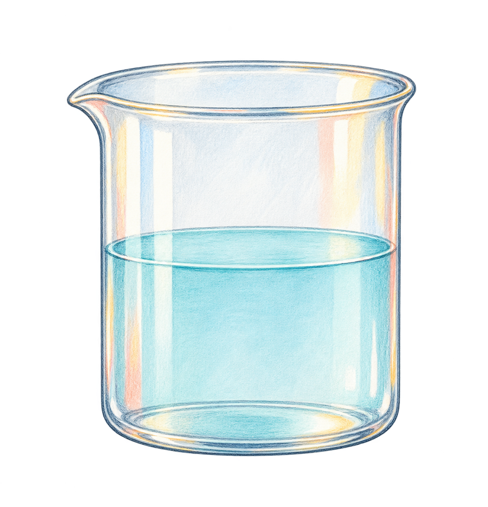

<!doctype html><html lang="zh-CN"><meta charset="utf-8"><meta name="viewport" content="width=device-width,initial-scale=1"><title>彩铅水彩·手绘科普风格样板</title><link rel="stylesheet" href="style.css"><main><header><strong>彩铅水彩 · 手绘科普风格样板</strong><a href="atlas.html">可复用效果图板</a><a href="README.md">制作与分工</a></header><div class="frame" id="frame"><div id="scene"><svg aria-hidden="true" style="position:absolute;width:0;height:0"><defs><filter id="wc-grain"><feTurbulence type="fractalNoise" baseFrequency=".045" numOctaves="2" seed="7" result="noise"/><feDisplacementMap in="SourceGraphic" in2="noise" scale="1.5"/></filter></defs></svg><div class="content" id="content"><div class="object eyebrow" style="left:102px;top:62px">日常科学 · 物质的变化 / 01</div><div class="object title" id="title" style="left:100px;top:102px">水为什么会<span class="highlight">蒸发</span>？</div><div class="object subhead" id="subhead" style="left:106px;top:225px">一杯安静的水，也在悄悄发生变化。</div><div class="object" id="tag-host" style="left:1050px;top:210px"></div><div class="object" id="arrow-host" style="left:780px;top:345px"></div><div class="object" id="spark-host" style="left:1390px;top:116px"></div><div class="object" id="leaf-host" style="left:120px;top:570px"></div><div class="object" id="underline-host" style="left:103px;top:197px"></div><div class="callout" id="callout"><strong>液态 → 气态</strong><br>水慢慢进入空气</div><div class="small-note" id="small-note">示意过程方向 · 不代表沸腾</div></div><div class="subtitle-zone" id="subtitle-zone"></div></div></div><div class="controls"><button id="play" disabled>播放 / 重播</button><button id="pause">暂停</button><button id="reset" disabled>回到开场</button><input id="seek" type="range" min="0" max="12000" value="0" disabled><output id="clock">准备中</output><label>字幕字号 <input id="font-size" type="range" min="20" max="44" value="32"></label><output id="font-value">32 px</output></div><p class="meta" id="status">正在准备字体与插画…</p><p class="meta">真实 HTML / SVG 效果 + 独立水彩插画。底部 100px 专作字幕。参考图板按组件版本复用。</p></main><script src="components.js"></script><script src="scene.js"></script></html>
